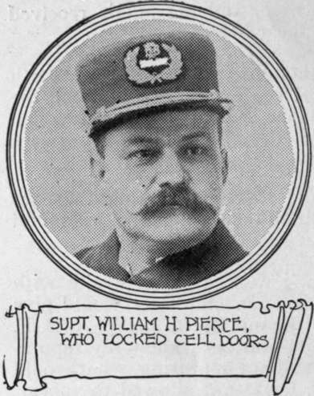
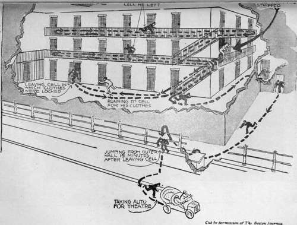
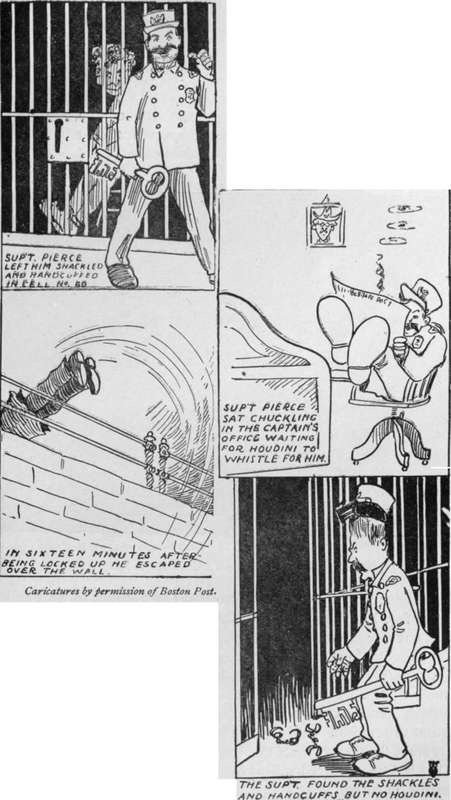

Houdini Escapes From City Prison
Description
This section is from the book "The Adventurous Life Of A Versatile Artist: Houdini", by Harry Houdini. Also available from Amazon: The Adventurous Life of a Versatile Artist; Houdini.
Houdini Escapes From City Prison
Handcuffed, Ironed, and Locked in Cell, He takes only 16 Minutes to Get Out and over the Wall
Harry Houdini, the young man who, apparently, cannot be held in restraint by steel bars, handcuffs, prison locks, or other restraining measures, gave the Boston Police Department a terrific jolt this forenoon when he escaped from double confinement in the city prison, commonly known as the Tombs, a prison which the heads of the police department had confidently believed to be escape proof.
Superintendent of Police William H. Pierce personally superintended the confinement of Houdini, himself locked the wizard into a cell on the second tier of the prison, after he had clamped handcuffs on his wrists and leg irons about his ankles, and the superintendent's face wore a smile of confidence and assurance after he had locked the cell doors and went down into the office of the prison to await results.
The superintendent's smile didn't wholly come off when, a few minutes later, he learned that Houdini not only had escaped from his cell, but that he had escaped from the prison, and was nearly a half-mile away; but the smile was faded and frayed at the edges, and no questioning could get the superintendent to say what he thought of the wonderful performance. All that could be gotten out of him was, "I have nothing to say."
Heretofore the police have believed that no one locked in a cell at the Tombs could possibly get out; but Houdini not only got out, but he opened door after door after he had removed the handcuffs and leg irons, and walked from one part of the prison to another with apparently as much freedom as though he wasn't met every few feet with a lock that had been considered impregnable.
Closely Searched For Keys
Briefly, here is just what happened: Houdini had secured permission from Superintendent Pierce to make an effort to escape from the city prison, and this forenoon, in the presence of about 30 men, the superintendent let Houdini into cell No. 77 on the ground floor of the Tombs, where Houdini, in the presence of the witnesses of the test, removed every stitch of his clothing, which he left lying on the bunk in the cell. When he came out, Capt. Clarence A. Swan, the keeper of the prison, locked the cell door upon Houdini's clothing, and then the young man was taken to the second floor of the block of cells, where Superintendent Pierce and a number of the men witnessing the test searched his hair for possible concealed keys or other instruments. Not a thing was found, and Houdini even asked to have his feet examined so there would be no question of his hewing a key concealed between his toes, and this was done.
Boston Journal, Tuesday, March 20, 1906.
Shackled And Locked In, Houdini Breaks Jail
Central Figures In Wizard Houdini's Mystifying Jail Escape And Diagram Of His Movements.
Inside the Cell at the City Tombs, Boston, Mass.
fried Sttpeirinteridfeht Pifcrts' took a pair of the rttost drJU proved handcuffs used in the1 police department and fastened them securely about Houdini's wrists, and on his bare ankles he clamped a pair of tested steel leg irons so tightly that the iron sank into the flesh. After that Houdini was locked in cell No. 60, and Superintendent Pierce and the witnesses went downstairs and out into the office, expecting Houdini would go there, providing he got out of his cell, and the police officials who were present seemed to feel pretty confident that he couldn't do that. This feeling was shared by some of the outsiders present, who could not bring themselves to believe that it could be done.
The only condition Houdini attached to his performance was that no one should be allowed to go into the part of the prison where he was confined to watch him escape, and the superintendent and the witnesses respected that condition, and most of them stayed in the captain's office. A few of the witnesses, however, went out into Somerset Street to wait and watch; for, knowing Houdini, they were prepared to see him come out anywhere.
Photo with permission of the Boston Globe. Over the Wall at the City Tombs, Boston, Mass.
These confident ones were rewarded for their trust, for 16 minutes after Houdini had been locked, naked, handcuffed, and ironed by the legs, into cell 60, he was seen running, fully dressed, except that he had not put on his collar and tie, across the prison yard, to climb up the wall leading into Somerset Street, to vault the iron railing at the top, and then to leg it like a scared rabbit over the hill in the direction of Keith's Theatre.
Continue to:
- prev: The Performer, December 15, 1910. A Stand For Justice: Houdini's Protest
- Table of Contents
- next: The Literary Houdini
Tags
magic, escapology, Houdini, wizard, escape artist, lock, handcuff